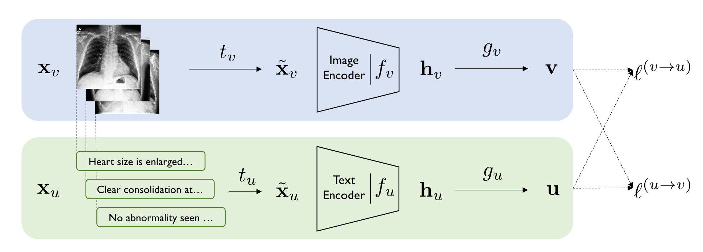

# ! pip install git+https://github.com/openai/CLIP.git
import torch
import torch.nn as nn
import clip
import timm1 Personal Updates
Hello, and welcome back everybody to the blog! This is my first blog of the year 2023 and as publicly announced on Twitter, I am returning to blogging with a commitment of 1 blog a week, planned to be released every Monday at 9am AEST.
Starting 01 Mar, 2023 I’ll be going back to blogging 1 post a week every Monday at 9am AEST.
— Aman Arora ((amaarora?)) February 7, 2023
These blogs will be about AI research, new technologies, updates, frameworks, Kaggle competitions and more.
If you have a topic that you’d like me to cover, please let me know. :)
Also, in case you missed it, I was also recently interviewed by Radek Osmulski - “How to Blog to Advance Your Career and Learn Faster” (in AI). In the video, we discuss and talk about my motivation for writing blogs, blogging to advance your career and learn, how to get started with blogging & more!
I have also updated my personal blog to use Quarto. The idea is to release all future blog posts which are working Jupyter Notebooks themeselves.
Now, with personal updates out of the way, let’s get started with CLIP.
2 Introduction
As part of this blog post we will be uncovering the inner workings of CLIP - Learning Transferable Visual Models From Natural Language Supervision (Radford et al. (2021)), and we will be looking at it’s PyTorch implementation in part-2 of the blog that will be released next week.
Radford, Alec, Jong Wook Kim, Chris Hallacy, Aditya Ramesh, Gabriel Goh, Sandhini Agarwal, Girish Sastry, et al. 2021. “Learning Transferable Visual Models from Natural Language Supervision.” CoRR abs/2103.00020. https://arxiv.org/abs/2103.00020.
CLIP in itself does not present a new idea, but implements an older idea of learning Image representations from text. CLIP applies this idea to a large scale dataset (400M images), and achieves zero shot transfer on ImageNet that matches ResNet-50. At the time of writing CLIP was the first model architecture to achieve such great zero shot results on ImageNet.
2.1 Key Contributions
If I am to summarise key contributions from the paper:
- New (image, text) pair dataset: We demonstrate that the simple pre-training task of predicting which caption goes with which image is an efficient and scalable way to learn SOTA image representations from scratch on a dataset of 400 million (image, text) pairs collected from the internet.
- Zero-shot performance that is competitive with supervised models: We study the performance of this approach by benchmarking on over 30 different existing computer vision datasets, spanning tasks such as OCR, action recognition in videos, geo-localization, and many types of fine-grained object classification. The model transfers non-trivially to most tasks and is often competitive with a fully supervised baseline without the need for any dataset specific training.
- High zero shot performance on ImageNet: We match the accuracy of the original ResNet-50 on ImageNet zero-shot without needing to use any of the 1.28 million training examples it was trained on.
- Open source model and weights: We release our code and pre-trained model weights at https://github.com/OpenAI/CLIP.
Before we start looking at the inner workings of CLIP, let’s look at some background that led to the development of CLIP.
3 Motivation for CLIP & Prior Work
CLIP was written in 2021, at a time where text transformer based models like GPT-3 (and others) were competitive across many tasks on various benchmark datasets, swhile requiring little to no dataset specific training data. This was made possible by pretraining on huge amounts of data found directly from the web. Pre-training on Wikipidea articles (WebText which contained the text subset of these 45 million links), became standard practice.
It was clear that models pre-trained on high web-scale collections of text surpassed that of high-quality crowd-labeled NLP datasets.
But, for vision based models, it was still standard practice to pre-train models on crowd-labeled datasets such as ImageNet. The question then is Could scalable pre-training methods which learn directly from web text result in a similar breakthrough in computer vision?
At the time it was still common practice to train on crowd labeled datasets for computer vision.
For example, Kolesnikov et al. (2019) and Dosovitskiy et al. (2020) had demonstrated large gains on a broader set of transfer benchmarks by pre-training models to predict the classes of the noisily labeled JFT-300M dataset. But both approaches used static softmax classifiers to perform prediction, which severely curtails their flexibility and limits their “zero-shot” capabilities.
But also, before CLIP some attempts had been made to learn image representations directly from text - VirTex (Desai & Johnson, 2020), ICMLM (Bulent Sariyildiz et al., 2020), and ConVIRT (Zhang et al., 2020).
TipImportant
In my humble opinion, ConVirt - “Contrastive Learning of Medical Visual Representations from Paired Images and Text” (Zhang et al., 2020) is of most interest of all prior work.

ConVirt introduced a new method of pretraining medical image encoders with the paired text data (as in Figure 1) via a bidirectional contrastive objective between the two modalities. This method was domain-agnostic, and required no additional expert input.
However, ConVirt had been applied in the medical context. CLIP expanded this idea to general visual recognition. Thus, ConVirt directly inspired CLIP.

The figure above shows the overview of ConVirt, and as you’ll notice, CLIP is quite similar.
From the ConVirt paper:
ConVIRT has directly inspired subsequent studies such as the CLIP framework (Radford et al., 2021) and the ALIGN model (Jia et al., 2021), which showed that direct adaptations of ConVIRT-style pretraining at much larger scales lead to state-of-the-art general visual recognition capabilities.
4 Approach
At the core of our approach is the idea of learning perception from supervision contained in natural language. As discussed before, this is not at all a new idea.
Learning from natural language has several potential strengths over other training methods. Can you think of some?
- It’s much easier to scale natural language supervision compared to standard crowd-sourced labeling for image classification.
- Learning from natural language also has an important advantage over most unsupervised or self-supervised learning approaches in that it doesn’t “just” learn a representation but also connects that representation to language which enables flexible zero-shot transfer.
4.1 Summary with Pseudo-Code
In this section I will present the summary of CLIP architecture from the paper.
The overall approach has been presented in Figure 3 below. Can you notice the similarities to ConVirt in Figure 2?

Note
CLIP Is architecture agnostic. You can use any models as visual and text encoders in Figure 3.
A team led by Ross Wightman, Cade Gordon, and Vaishaal Shankar have a repository OpenCLIP that is an open source implementation of CLIP and enables training for any vision models with contrastive image-text supervision.
Note
Also, recently, Ross Wightman also announced a 847M param ConvNext model trained via CLIP training that achieves 79.43% ImageNet zero-shot eval. Astonishing, right?
The approach presented in Figure 3 has been summarised in pseudo code from paper:
# image_encoder - ResNet or Vision Transformer
# text_encoder - CBOW or Text Transformer
# I[n, h, w, c] - minibatch of aligned images
# T[n, l] - minibatch of aligned texts
# W_i[d_i, d_e] - learned proj of image to embed
# W_t[d_t, d_e] - learned proj of text to embed
# t - learned temperature parameter
# extract feature representations of each modality
I_f = image_encoder(I) #[n, d_i]
T_f = text_encoder(T) #[n, d_t]
# joint multimodal embedding [n, d_e]
I_e = l2_normalize(np.dot(I_f, W_i), axis=1)
T_e = l2_normalize(np.dot(T_f, W_t), axis=1)
# scaled pairwise cosine similarities [n, n]
logits = np.dot(I_e, T_e.T) * np.exp(t)
# symmetric loss function
labels = np.arange(n)
loss_i = cross_entropy_loss(logits, labels, axis=0)
loss_t = cross_entropy_loss(logits, labels, axis=1)
loss = (loss_i + loss_t)/2Let’s look at what it all means with the help of Microsoft Excel.

Let’s say we have 8 images with corresponding text descriptions as in Figure 4. CLIP presents a training framework to maximise the cosine similarity of text and image embeddings.
As from the pseudo-code, first we pass the images through image encoder and texts through text encoder respective to get image and text features.
x = torch.randn(8, 3, 224, 224)
visual_enc = timm.create_model('resnet50', num_classes=0)
I_f = visual_enc(x)
n, d_i = I_f.shape
n, d_i(8, 2048)Therefore in the above case, referencing to pseuo-code, \(n=8\) and \(d_i = 2048\).
text_enc = nn.Embedding(100, 768)
T_f = text_enc(torch.arange(8))
n, d_t = T_f.shape
n, d_t(8, 768)Similarly, referencing to pseudo-code, \(n=8\) and \(d_t=768\).
Let’s just assume the embedding dimension \(d_e = 1024\), now, as per psuedo-code, we can have two projection layers- \(W_i[d_i, d_e]\) and \(W_t[d_t, d_e]\) both for text and image features respectively.
d_e = 1024
W_i = nn.Linear(d_i, d_e)
W_t = nn.Linear(d_t, d_e)
W_i, W_t(Linear(in_features=2048, out_features=1024, bias=True),
Linear(in_features=768, out_features=1024, bias=True))Now that we have our projection layers, as per pseudo-code, we get our joint multimodal embeddings through dot product.
I_e = W_i(I_f)
T_e = W_t(T_f)
I_e.shape, T_e.shape(torch.Size([8, 1024]), torch.Size([8, 1024]))Now that we both our Image and Text embeddings, we can find cosine-similarity.
# scaled pairwise cosine similarities [n, n]
logits = I_e @ T_e.T
logits.shapetorch.Size([8, 8])
We want the cosine similarity of real (text, image) pairs to be high (right diagonal), and everywhere else to be low.
So what loss function could we use in this case? The answer is in the pseudo-code.
# symmetric loss function
labels = np.arange(n)
loss_i = cross_entropy_loss(logits, labels, axis=0)
loss_t = cross_entropy_loss(logits, labels, axis=1)
loss = (loss_i + loss_t)/2When we do cross entropy loss with both axis=1 and axis=0, we are pushing logits to be high for the diagonal and low everywhere else. This is also referred to as Contrastive Loss. Thus, by doing this the CLIP model is able to learn visual features directly from text.
By training on a dataset of 400 million (image, text) pairs, the CLIP model is able to attain zero shot performance on ImageNet that is comparable to ResNet-50!
And that’s really all the magic behind CLIP.
5 Conclusion
As part of this blog post, we introduced the CLIP architecture to the reader. We saw how the CLIP approach is very similar to ConVirt with some very minor differences which we will discuss further in part-2 of the blog to be released next week.
In part-2, we will also be looking at the PyTorch code of CLIP, and the training code from OpenClip.
If you enjoyed reading, please feel free to subscribe to receive regular updates regarding new blog posts.